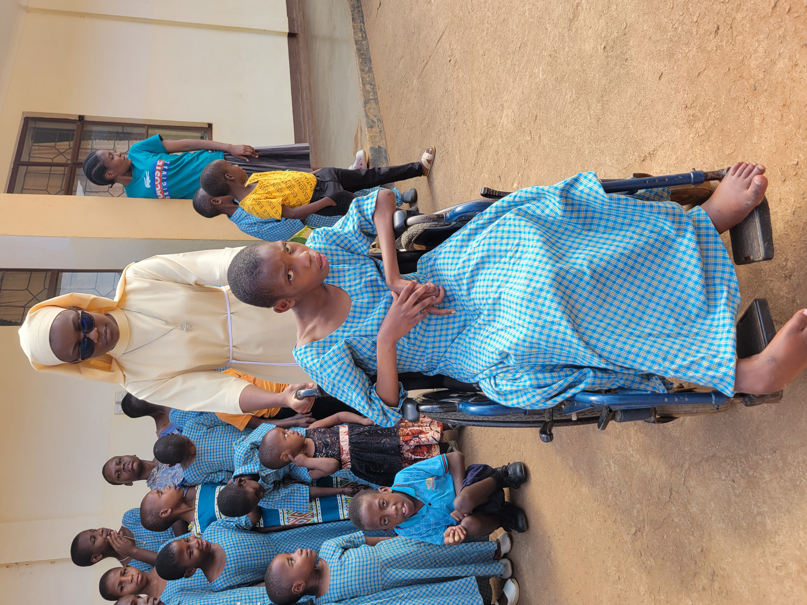

Our Core Ministries
The Little Sisters of St. Francis are dedicated to serving communities in North Eastern Tanzania through various ministries.

Education
Empowering communities through quality education, from early childhood development to adult literacy programs.

Healthcare
Providing comprehensive medical care to underserved communities, including maternal health and child nutrition.

Social Work
Supporting children with disabilities in the Same District of Kilimanjaro Region, Tanzania.